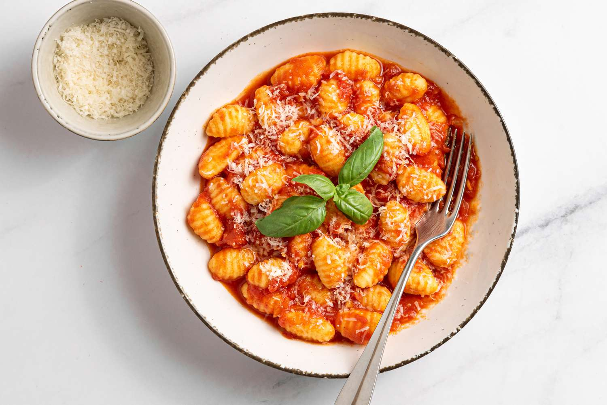

Gnocchi

Description
Gnocchi is different from many other pastas because it is made with potato. The potato
creates a unique flavor and texture that makes it my favorite pasta! Gnocchi is quite
easy to make, but it can be deceptively difficult to make them look as pretty as the
gnocchi pictured above. Thankfully, gnocchi is just as delicious even if it looks a
little strange.
Ingredients
- 4 large Idaho potatoes
- 2 tablespoons salt (add more to taste)
- 2 cups all purpose flour, or 00 flour
- 2 large eggs
Directions
-
Place unpeeled potatoes in a pot, covered by 2 inches in cold water.
Add 1 tablespoon salt, and bring to a boil on high heat.
-
Reduce heat to medium-high, and cook until tender (about 40 minutes)
-
Remove potatoes from water and peel immediately. Hold them with a clean
kitchen towel to prevent burning yourself.
-
Flour your work surface, then pass potatoes through a potato ricer. Make a
well in the center of the potato mound, sprinkle flour and salt over the
potatoes, and crack the eggs into the well.
-
Lightly beat the eggs, then gently incorporate the ingredients. Once it reaches
a more dough-like consistency, knead lightly on your work surface until your
dough is soft and smooth.
-
Divide your dough into smaller portions, and shape each portion into a rope
about 3/4 inch in diameter. Cut each rope into 1-inch pieces.
-
To shape the gnocchi, hold a fork in one hand. With the other hand, press the
center of the gnocchi against the fork to make an indentation. Roll the gnocchi
down the fork, allowing it to flip away. A proper gnocchi will have indentations
on one side and a depression on the other.
-
To cook the gnocchi, drop them into boiling water and let them cook until they start
floating (usually about 2-3 minutes). If you're cooking a lot of pasta at once, like
my family does, you can have these cook slowly in a big pot of tomato sauce. Be sure
to keep the heat LOW in this case. Overcooking them will make them mushy.